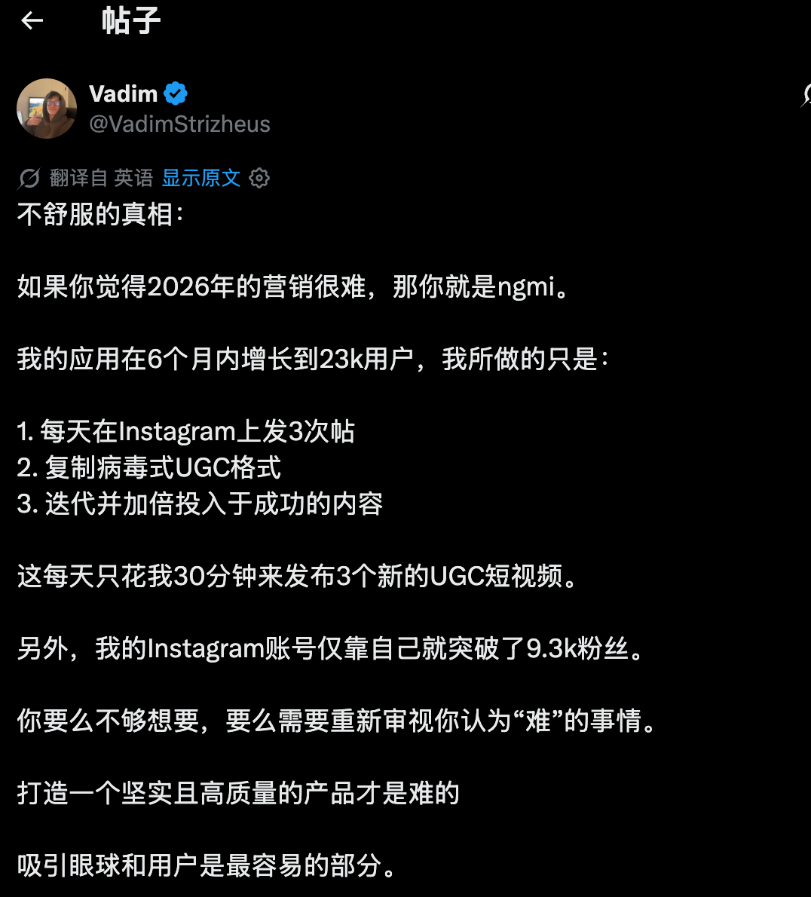

Marketing · UGC
UGC Marketing Is Not Hard
把“营销很难”拆成每天可以重复执行的动作：发布、复制、迭代、加倍投入。

不舒服的真相：如果你觉得2026年的营销很难，那你就是ngmi。
我的应用在6个月内增长到23k用户，我所做的只是：
- 每天在Instagram上发3次帖。
- 复制病毒式UGC格式。
- 迭代并加倍投入于成功的内容。
这每天只花我30分钟来发布3个新的UGC短视频。
另外，我的Instagram账号仅靠自己就突破了9.3k粉丝。
你要么不够想要，要么需要重新审视你认为“难”的事情。
打造一个坚实且高质量的产品才是难的。
吸引眼球和用户是最容易的部分。